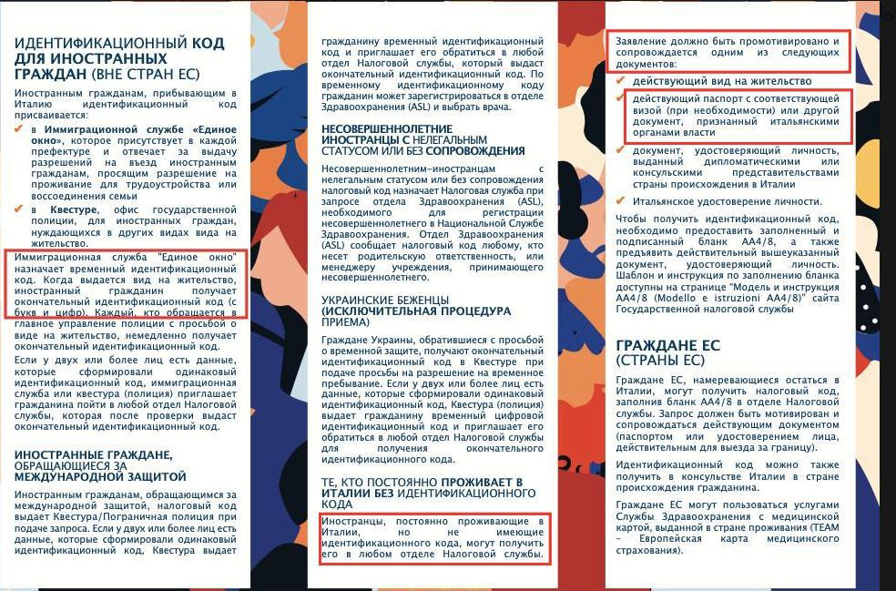

🔴СОПУТСТВУЮЩИЕ ВОПРОСЫ
Образец заполнения. КИТ для продления ВНЖ Lavoro Autonomo (+1 ребенок до 14 лет + супруг)
Можно ли гражданину РФ (резиденту Италии) открыть счёт в местном банке и держать на нём больше 100 тысяч евро?
Ни на европейском уровне, ни на итальянском не запрещено резиденту Италии (гражданину РФ), не попавшему под персональные санкции, открывать счет в банке и иместь на счету более 100 тысяч евро, но все банки должны о отчитываться по гражданам рф перед центробанком Италии.
По факту, если сумма больше 100 тысяч, банки просто не хотят этим заниматься.
Ссылки:
Отчетность перед ЦБ Италии (pdf)
Европейское законодательство о финансовых активах граждан РФ
Если вы пользуетесь криптой p2p, покупая её за рубли в рф банке.
Критерии из разъяснений цб, которыми пользуются банки и из-за которых могут начать проверку и впоследствии забокировать вам счёт - (смотрим, не нарушаем):
💸 P2P-переводы. Если клиент делает больше 5 таких переводов в день.
💸 Оборот более 100 тысяч рублей в день.
💸 Оборот более 1 млн рублей в месяц.
💸 Более 30 операций за день.
💸 Менее минуты между зачислением и списанием средств.
💸 Отсутствие платежей в пользу ЖКХ, услуг связи и оплаты товаров.
+лайфхаки:
💶иногда поводом для блокировки может стать подозрительный получатель платежа.
💶Лучше используйте при p2p сбп, а не перевод по карте: так вы узнаете сразу номер телефона и фио получателя.
💶Если фио получателя кажутся подозрительными, подумайте, не отменить ли ордер.
💶Я выбираю для сделки человека с меньшим кол-вом ордеров, но при этом с хорошим процентом закрытых ордеров (90%+)
💶держите включенным рф номер телефона, привязанный к банку, чтобы не пропустить звонок из поддержки.
Польза SPID
📌SPID - это электронная идентификация личности, которая дает возможность доступа online к разным гос.услугам и нужным сервисам (типа налоговой и т.п.)
📌 SPID можно сделать, имея итальянское удостоверение личности - carta d’identità.
📌 Существует несколько компаний, аккредитованных правительством Италии создавать и управлять аккаунтами SPID
Вот список этих компаний на правительственном сайте. Обратите внимание: не все компании делают SPID онлайн. Не все делают онлайн SPID через приложение (а через комп нужен специальный картридер). Также не все позволяют удобно авторизовываться через SPID на разных порталах с помощью куар-кода. Некоторые компании имеют только сервис otp-кодов (когда ты получаешь через приложение набор цифр и вводришь его для авторизации на нужный портал).
📌 Есть SPID персональный, а есть - профессиональный, который подходят для ИП, например. Персональный SPID почти все аккредитованные компании предоставляют бесплатно. А профессиональный SPID часто предлагают платно - я видела разброс цен от 20 до 40 евро в год. В чём разница между персональным и профессиональным SPID я пока не разобралась. Если вы знаете, напишите, дополню!
📌 Кроме SPID есть ещё приложение и сервис CieID - это приложение, которое связано напрямую с вашей carta d’irentità (итальянским удостоверением личности). Я увидела, что порталы, где есть авторизация через SPID, так же предполагают авторизацию через CieID. Но возможно, не все порталы предоставляют возможность входа и через SPID, и через CieID. Если вы знаете доп. информацию, напишите, дополню!
Наблюдения и лайфхаки:
📌 Приложение итальянской почты (которая есть в списке компаний, имеющих право управлять и создавать SPID) называют очень удобным, поскольку там просто регистрироваться и можно считывать куаркоды для доступа на разные порталы, где требуется SPID. Однако, мой опыт был негативным: при регистрации SPID через app poste italiane приложение при считывании чипа на карте ID пишет мне "errore generico". Аналогичный опыт был ещё у одной девушки из моего города, цитата: "я ходила на почту, и там тоже не смогли мне сделать spid, женщина сказала, что у них что-то в системе) в итоге я сделала через сайт namirial, самостоятельно, установила app,все работает. С почтой не получилось даже в отделении".
📌 Sielte ID можно открыть бесплатно, удалённо и без кардридера. Вот отзыв в нашей группе.
📌 несколько человек рекомендовали компанию namirial Персональный SPID делают бесплатно, логины тоже бесплатно. Зарегистрироваться можно оналйн, но в процессе регистрации есть “танцы с бубном”.
Поскольку я сделала SPID через namirial, могу описать процесс:
🔺 зарегистрироваться онлайн можно через приложение CieID. То есть, придется сначала его скачать.
🔺 потребуется рядом телефон с NFC и номер тессеры санитария (она нужна, чтобы завершить процесс регистрации)
🔺 сама регистрация SPID делается с сайта namirial (не с приложения), и c телефона лучше на сайт не заходить - мобильная версия глючит, меня выбрасывало несколько раз в процессе заполнения форм. С компа всё работает адекватно.
🔺 логин и пароль от SPID namirial приходят на эмейл в 2 письмах - в одном логин, во втором - пароль.
🔺 через куар-коды namirial не предоставляет доступ на порталы, требующие заход со SPID. Предоставляет доступ только через otp-коды (одноразовые 6-значные цифровые пароли, генерируемые в приложении namirial otp
📌 Lepida SPID делают в любой аптеке бесплатно. В том числе с бумажной картой идентита. Отзыв по ссылке (https://t.me/c/1561962579/706).
📌 aruba Хороша тем, что можно там же завести почту рес и электронную подпись. Также можно с бумажной карта идентита, в тч удалённо (но всё платно).
Отзыв в нашей группе
Дополнение по аруба: можно БЕЗ тессеры санитарии. Если ее нет, вместо номера вписываешь нули.
В Италии существует domicilio digitale.
Указав ваш PEC в сервисе INAD (Indice Nazionale dei Domicili Digitali) в качестве своего цифрового места жительства, вы будете получать все сообщения от органов государственного управления, имеющие юридическую силу, прямо на свой PEC почтовый ящик.
Вы можете управлять своей учетной записью самостоятельно: в любой момент вы можете указать другой сертифицированный адрес электронной почты или удалить его навсегда.
если все ок с доками (ВНЖ/ПМЖ, карта идентита и так далее), то вариантов несколько:
Мне только что звонили из UNAR (национальный офис против дискриминации).
Сказали, что в последнее время им поступает по телефону и почте много сигналов от россиян на отказ в открытии счета. (И сказали, что я молодец, потому что это началась после того, как я распространила инфу про UNAR.😂)
UNAR успешно помогает в отельных случаях каждому.
Но чтобы получить централизованное решение (например, циркуляр от UNAR и МВД, в котором бы ясно говорилось, что нельзя отказывать россиянам в открытии счета на основании гражданства) - нужно еще больше.
Понимаете? Они прямо говорят - дайте нам больше жалоб, и мы такой массой попробуем «продавить» централизованное решение проблемы. Так и сказали - мы работаем, но нужно больше сигналов от вас.
Поэтому напоминаю еще раз: если вам отказывают в открытии счета в банке: то:
- звоните в UNAR прямо из отделения и передавайте трубку сотруднику банка. Номер UNAR: 06 6779 2267 или 800901010.
Это очень действенно, проверено, счет открывали во всех известных мне случаях.
- направляйте им жалобы на отказ в открытии счета, прикладывая документы: имейлы с отказом из банка, письменные отказы, аудио/видео-записи, все что у вас есть. Нужно описать ситуацию, назвать филиалы и адреса банков и приложить документы.
Их адреса
Email: segreteriaunar@governo.it contactcenter@unar.it
PEC: unar@pec.governo.it
На всякий случай, из сайт:
https://www.unar.it/portale/
Они знают о проблеме и прямо говорят, что это незаконно. (Особенно из случай студентов возмущает, но не только.)
Поднажмем на количество жалоб, чтобы стимулировать централизованное решение проблемы.
Вот ссылка на док OECD про налоговые номера в Великобритании (pdf)
Опубликован текст декрета по Digital nomad
Decreto 29 febbraio 2024 (тот самый тип ВНЖ, которого все ждали, но не было разъяснений, что же нужно, чтобы его получить).
🗞 Сам текст декрета очень компактный - всего 7 небольших статей, можно изучить самостоятельно.
🗞 Пока обзоры только начинают выходить, ни одного полного я ещё не видела.
Текст декрета в pdf
После общения с бухгалтером, появилась следующя информация
Биланчино Кто-то из коммерчиалиста просит деньги за него, кто-то делает бесплатно. Я получила такое объяснение - за деньги (типа 200-300 евро) делается биланчино с "ассеверационе" - это когда бухгалтер гарантирует, что эти деньги точно пойдут в декларацию и налоги точно будут уплачены. Удостоверяет это. А бесплатно бухгалтеры делают просто биланчино из системы (там бухгалтер выступает просто как посредник информации и ничего не гарантирует). Подпись его там будет, но "ассеверационе" - нет.
Далее моё предположение (то есть точно я не знаю): мне кажется, далеко не все квестуры разбираются, какой у вас тип биланчино. Деньги заявлены, подпись бухгалтера есть - значит, ок. Поэтому можно сначала делать обычный бесплатный биланчино, а вот если квестура потребует с "ассеверационе", то уже заплатить бухгалтеру за такой.
И ещё одно предположение: некоторые бухгалтеры могут взять с вас 200-300 евро, но сделать просто биланчино из системы без "ассеверационе" Так что, будем бдительны 😜
Статья Как закрыть партиту с пояснениями.
Если есть SPID, то онлайн возможно этосделать тут: agenziaentrate.gov.it
CNS - Carta nazionale dei servizi
Наряду со SPID и CIE - это ещё один способ доступа к различным гос. порталам
Плюсы: можно сделать без карты д'идентита и резиденцы. Например, на Aruba есть цифровая подпись со встроенным CNS, можно активировать с помощью web cam, паспорта и кодиче фискале (с печатью из налоговой или консульства). Отзыв в нашем канале
CNS может выдать Camera di commercio и другие операторы, онлайн или в офисах. Подробно тут
Если tessera sanitaria с чипом, она считается интегрированной c CNS: TS-CNS, и также даёт доступ к онлайн услугам.
📍Процесс конвертации ВНЖ из студио в лаворо аутономо состоит из 2 этапов.
1️⃣ запрос "нулла оста", этот документ "нет препятствий для конвертации" запрашивается онлайн, его выдаёт префектура в бумажном виде (то есть, потом нужно прийти и получить). Однако рассматривают запрос одновременно префектура и инспекция по труду. Обе инстанции одновременно видят онлайн поступивший запрос, и сначала свой ок должна дать инспекция по труду, после чего префектура должна со своей стороны рассмотреть соответствие запроса требованиям и выпустить нулла оста (либо отказать).
2️⃣ вы подаёте кит на конвертацию ВНЖ из студио в лаворо (как обычно, в квестуру) и туда прикладываете полученную нулла оста. Предзаполненный кит в части лаворо аутономо вам должна выдать префектура при получении нулла оста.
Как подать запрос на нулла оста для конвертации ВНЖ из студио в лаворо в процессе учебы (до диплома)?
📌Запрос делается онлайн на гос. портале по этой ссылке. Внимание! Портал не работает вечером и в выходные (да, это странно, но мы в Италии 😁)
📌Авторизоваться на нём можно по SPID или CIE.
📌После авторизации ищем на странице надпись sportello unico immigrazione, нажимаем на неё, откроется выпадающий список, выбираем compila domande.
📌На открывшейся странице выбираем nulla osta per motivi di lavoro и нажимаем на compila.
📌дальше нажимаем на scegli una domanda, выпадает большой список, выбираем Conversione fuori quota e progetti speciali.
📌Рядом появляется ещё один выпадающий список Scegli una domanda, там выбираем Z - Richiesta di nulla osta alla conversione del permesso di soggiorno per studio, tirocinio e/o formazione professionale in permesso di soggiorno per lavoro autonomo e di certificazione attestante il possesso dei requisiti per lavoro autonomo – FUORI QUOTA
📌Начинаем заполнять запрос (доманду). Можно сохранять черновики и потом к ним возвращаться. Для этого нажимаем salva или при нажатии esci dalla compillazione в окне с вопросом "сохранить или нет", выбираем "сохранить". Потом, чтобы найти вашу доманду, нужно будет после авторизации под надписью sportello unico immigrazione из списка выбрать ricerca domande.
📌Заполнение (там в целом понятная навигация, всё расписано, что куда писать):
1 страница - Личные данные, гражданство, данные учебного пермессо, адрес для коммуникаций;
2 страница - выбираем тип вашей деятельности - например либеро профессиониста или артиджиано и т д (из выпадающего списка);
3 страница - вводим номер марки да болло и дату оплаты (заранее купите марку да болло за 16 евро);
4 страница - прикрепляем документы по списку.
📌Подробнее о документах:
1️⃣пермессо;
2️⃣DOCUMENTAZIONE ATTESTANTE IL POSSESSO DEI REQUISITI RELATIVI ALL'ATTIVITÀ OGGETTO DEL LAVORO AUTONOMO IN ESAME - документация по партита ива - я прикрепляла ⚠️сертификат открытия партиты, ⚠️лист регистрации в INPS, ⚠️биланчино за текущий год - у меня ещё не было декларации, достаточно новая партита), ⚠️лист с информацией о себе - написала в произвольной форме кто я, что я делаю, адрес моего сайта, данные о регистрации в профильной ассоциации - это не обязательно для моей деятельности, но я заранее нашла ассоциацию и зарегистрировалась, данные о призе в профессиональном конкурсе в Италии - тоже не обязательно, просто у меня было, и я написала) ⚠️диплом о призе в проф. конкурсе (выше писала, что это не обязательно, но у меня был); вот это всё я объединила в 1 pdf ;
3️⃣ паспорт;
4️⃣ RICEVUTA DELLA RICHIESTA/ CERTIFICATO DI IDONIETA' ALLOGGIATIVA RIGUARDANTE L'ALLOGGIO DEL LAVORATORE (это идониета аллоджатива, её делают, как правило, в коммуне, смотрите на сайте коммуны, сроки около месяца), я прикладывала запрос на идониету, потом её досылала;
5️⃣CESSIONE FABBRICATO/ DICHIARAZIONE DI IMPEGNO A FORNIRE LA CESSIONE DI FABBRICATO. Здесь я приложила контракт аренды квартиры (у меня партита открыта по адресу моей квартиры) и лист регистрации контракта в налоговой.
6️⃣DOCUMENTO CHE CONFERMA LO STATO DI RIFUGIATO/APOLIDE. - я не беженец, ничего не прикладывала
7️⃣ALTRO сюда ещё раз прикрепила лист о себе и своей деятельности (он же был в сборном PDF документов по партите)
📌Дальше сохраняемся и выходим (если не уверены, что всё ок и хотите вернуться к отправке позже) или нажимаем invia - отправить доманду. После чего для успокоения души ищем и находим отправленную доманду, нажав на sportello unico immigrazione, выбираем там отправленные доманды и наслаждаемся видом своей. Там же можно скачать ричевуту.
Что у меня дозапрашивали в префектуре: (писали мне на эмейл, который я указывала для связи), и я отправляла ответом им на эмейл (на портале у меня не получилось подгрузить в имеющуюся доманду):
🔅 запись в университет (iscrizione)
🔅passaporto con visto e timbro di primo arrivo in Italia (двухлетней давности)
🔅certificato di residenza
🔅certificato di idoneità alloggiativa (к доманде я прикрепляла только запрос на идониету, а когда её получила, отправила саму идониету - документ)
🔅il documento di identità del professionista che ha redatto il bilancino (биланчино я делала в своей онлайн бухгалетрии taxman, запросила у них идентиту бухгалтера, он мне прислал - причем, с вотермарком "для биланчино такой-то синьоры (моя фамилия)")
🔅il bilancino aggiornato alla data odierna (тут тоже проблем не было, я работаю, поэтому видно, что доходы прибавляются)
Чтобы ускорить процесс, я ходила в префектуру и в инспекцию по труду (это не обязательно, но мне помогло). Через 4 месяца я получила уведомление на эмейл, что нулла выпущена. Потом пришел ещё 1 эмейл с датой визита в префектуру. Потом позвонили из префектуры и сказали, что это был автоматический эмейл, и пока не надо приходить, нуллу должен подписать начальник, и они со мной свяжутся, когда он подпишет.
На визит в префектуру с собой попросили взять 3 марки да болло (одна из которых использовалась в доманде на нуллу) и оригиналы документов. И - внимание - от письма, что нулла готова, до даты визита в префектуру может пройти много времени (в моём случае около 3 недель)
Фсё! Па-рам-па-па-пам! 🥂🍾
Что стало известно о процессе получения кодиче фискале в 2026 для Digital Nomad, который ещё не получил ВНЖ и ждёт.

По закону art. 6 DPR 605/1973 можно запросить в адженсии кодиче если есть мотивировка и есть документы легальные (Например виза D и ричевута). Сама же инструкция от налоговой подтверждает это.
Заполняете Modello AA4/8
Приложить документы:
• паспорт
• визу D
• ricevuta permesso
• заявление в котором описать, что постоянно проживаю в италии, надо открыть партита ива и сослаться на закон, желательно прям текст из закона где это прописано + в случае отказа попросить мотивированный отказ со ссылкой на законы.
Ещё есть какой-то временный кодиче в едином окне, но это опять же опция, как по мне можно просить сразу полноценный в адженсии, так как все основании есть.
Вот инструкция на разных языках чтобы показать их сотрудникам налоговых.
P.S. Техническая у них возможность есть, они просто вредничают. Наш клиент в Генуе получил отказ в получении его отправили в квестуру, а потом (удивительная магия) ему на email написал сотрудник налоговой, что посоветовался с коллегами на кофе и сказали что можно для DN получить кодиче, приходите я вам сделаю. Он вернулся и получил кодиче.